정다훈
프론트엔드에서 풀스택, AI까지 확장해 온 Product Engineer
dahun428@naver.com·github.com/dahun428-fx
총 경력 5년 10개월
목차
문서 소개
대웅제약 AI추진팀에서 개발·운영한 AI코치·비즈36.5·바이오에이지와 서비스 검증·설정 도구를 담았습니다. AI 응답 렌더링, 복잡한 B2B 정책의 화면 모델링, 반응형·WebView 대응, 검증 자동화 경험을 실제 화면으로 설명합니다. 화면을 공개할 수 없는 한국미스미 글로벌 B2B 커머스 전환 경험은 Ch.5에 기술적 판단과 결과를 중심으로 정리했습니다. 수록 서비스는 사내·B2B 서비스로 외부 링크는 제공하지 않습니다.
AI코치
AI 건강검진 챗봇 제품화
AI코치는 건강검진 결과를 사용자가 이해하고 되물을 수 있게 만드는 AI 건강 상담 서비스입니다. 시작점은 목업 수준의 챗봇이었고 답변 지연·Markdown 렌더링·오류 대응·고객사별 확장 구조가 모두 부족한 상태였습니다. 프론트엔드를 총괄해 SSE 기반 실시간 스트리밍과 답변 중지·재시도·재생성 흐름을 구현하고, LLM이 내려주는 Markdown 응답을 표·차트·링크 React 컴포넌트로 바꿔 그리는 렌더링 계층을 설계했습니다. 검진 결과·건강 점수·만성질환 분석을 포함한 건강 데이터 분석 기능과 AI 상담·병원 추천 등 12개 도메인 모듈, 브라우저 언어 감지 기반 다국어 환경을 갖춘 실서비스로 전환해 임직원 3,493명이 실제로 사용했습니다. 품질은 발화 400건 검증 기준 답변 화면 정상 출력률 100%, AI 응답 평균 2초대(네트워크 수신 기준), Lighthouse 91점(AI 챗봇 화면 기준)으로 확인했습니다.


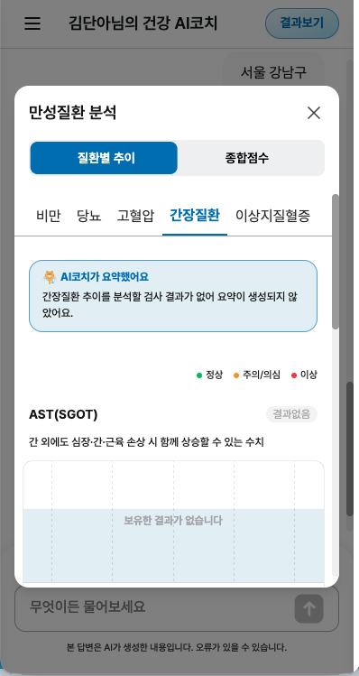
왼쪽부터 — AI 응답의 표 컴포넌트 렌더링: Markdown을 표·차트로 바꾸는 React 렌더링 계층, 복사·재생성 UX / 만성질환 종합점수 분석: 게이지·레이더 차트 컴포넌트 렌더링 / 질환별 추이 + AI 요약: 도메인 모듈과 LLM 요약을 결합한 화면
AI코치
병원 검색 대화 플로우

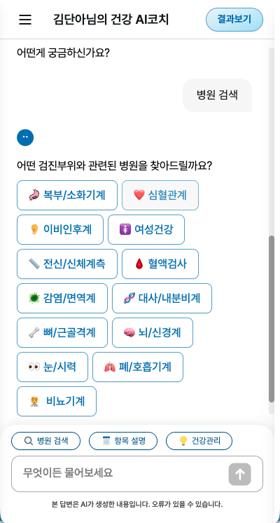
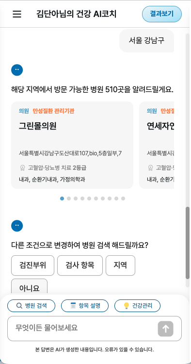
병원 검색 대화 플로우 — 웰컴 → 부위 선택 → 결과 카드로 이어지는 태스크 플로우. 대화형 태스크를 단계별 상태로 분리해 이탈 지점을 관측 가능하게 구성
비즈36.5
임직원 건강검진 통합플랫폼
비즈36.5는 임직원의 검진 예약부터 결과 확인·건강관리까지 담는 B2B 건강검진 통합플랫폼입니다. 2019년에 작성된 jQuery·Thymeleaf 레거시는 Spring Boot·MySQL과 강결합돼 SPA로 한 번에 옮길 수 없는 구조였고, 전면 재작성의 일정·회귀 리스크와 jQuery 장기 공존의 유지비를 함께 저울질한 끝에 React를 화면 단위로 공존시키는 점진 전환을 택했습니다. 변경과 장애가 잦은 영역부터 순서를 정해 108개 페이지·82개 화면을 9주 안에 단독 전환했고, 신규 건강관리 기능은 MySQL 데이터 모델부터 Spring Boot 서버 로직·REST API·화면까지 전 구간을 직접 개발했습니다. React 전용 데이터 집계·프록시 계층(Node.js Express BFF)도 팀 공동으로 신규 구축해, 여러 백엔드 응답을 FE 소비 형태로 합치는 집계·가공은 BFF에 두고 Spring Boot의 비즈니스 로직은 그대로 유지하는 경계로 분리했습니다. 미디어 쿼리 기반으로 PC와 모바일 화면 크기를 함께 대응했습니다. 이 서비스는 모바일에서 WebView로 제공되기 때문에 모바일 뷰포트 대응을 중점적으로 다뤘고, iOS·Android WebView 호환성 검증 기준을 세웠습니다.


검진 예약 — PC / 모바일: 같은 화면을 미디어 쿼리로 반응형 대응
비즈36.5
검진결과 분석과 서비스 구조

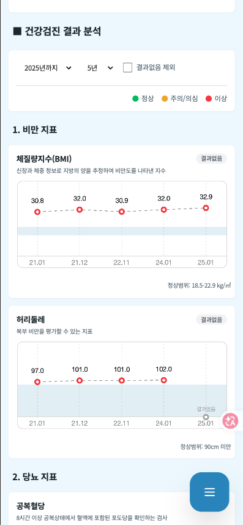
검진결과 추이분석 — PC / 모바일: 정상범위 음영·결과없음 처리를 포함한 차트, 반응형 대응
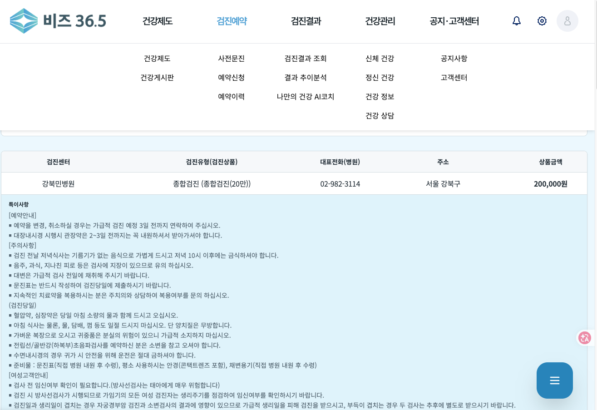
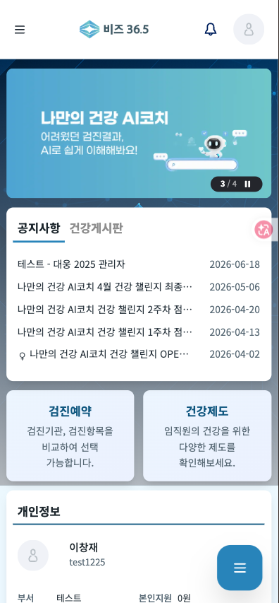
전체 서비스 IA(GNB 메가메뉴): 108페이지 규모의 정보구조를 보여주는 화면 / 모바일 홈: AI코치 배너로 서비스 간 연결을 보여주는 진입 화면
비즈36.5
화면 유형별 반응형 대응
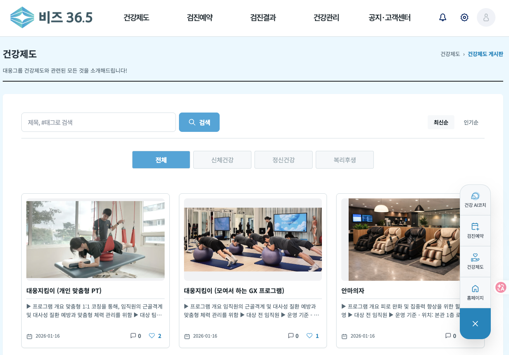
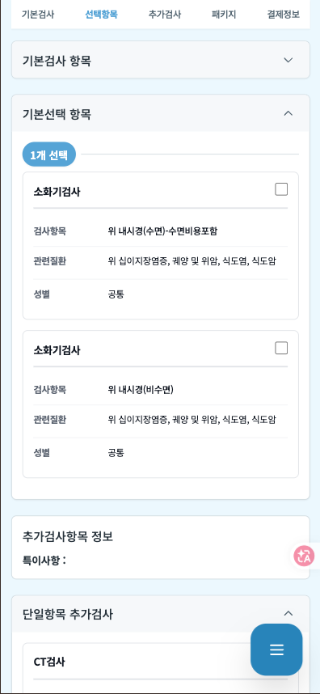
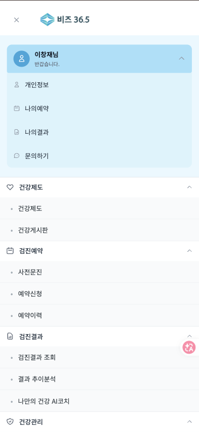
건강제도 게시판·검진상품 선택·모바일 메뉴 — 콘텐츠·목록·내비게이션 화면 유형별 반응형 대응
바이오에이지
운영관리 시스템과 리포트 추출 데스크톱 앱
바이오에이지는 검진 데이터를 분석 리포트로 만들어 병원에 제공하는 서비스입니다. 외주로 도입된 V2 버전을 넘겨받아 UI와 데이터 운영 리스크를 걷어냈고, 리포트 관리·표준코드 관리 등 운영관리 화면을 직접 개발·수정해 서울성모병원에 납품했습니다. 리포트를 자동으로 추출하는 Electron 기반 데스크톱 클라이언트도 함께 유지보수했습니다. 배포는 이미 구성된 AWS S3·EC2 환경 위에서 배포 파이프라인을 운영하며 진행했고, 기존 고객 112처 중 93처가 안정적으로 전환됐습니다.

바이오에이지 분석 리포트 관리·프리뷰: 리포트를 제품화한 Admin 상세 화면 (테스트 데이터·Dev 검진센터 기준)
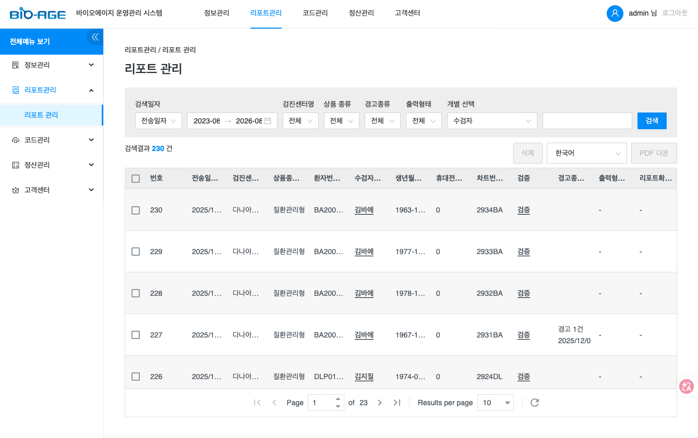
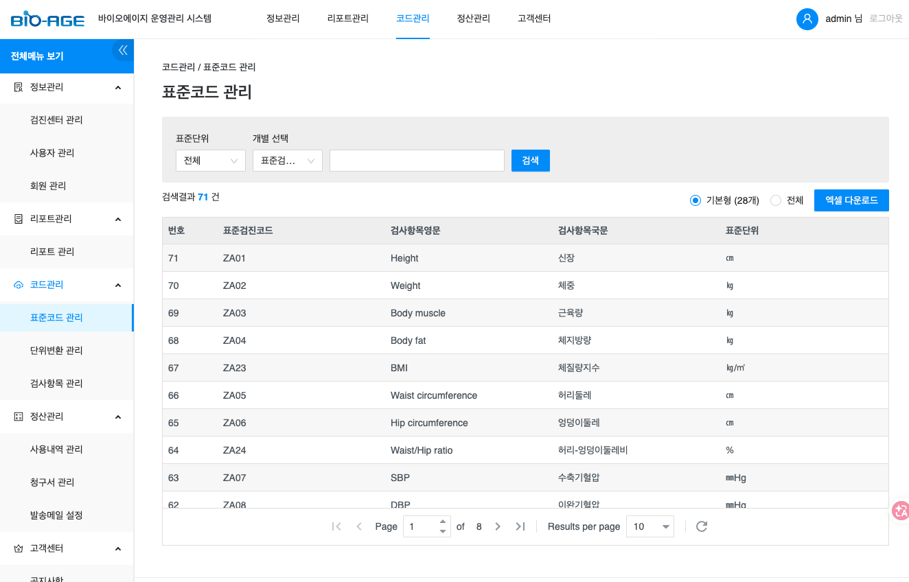
리포트 운영 목록: 운영관리 시스템의 규모를 보여주는 화면 / 표준코드 관리: 데이터 표준화를 위한 관리 화면
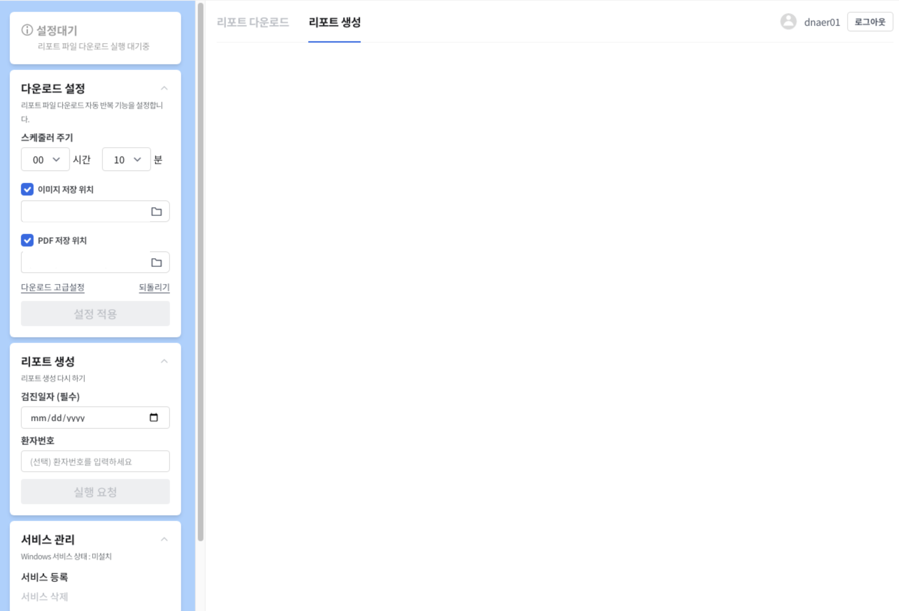
리포트 자동 추출 데스크톱 앱: Electron 기반 클라이언트(민감정보 크롭 — 버전 표기·로컬 저장 경로 비공개)
검증 하네스·어드민 도구
배포 전 품질을 도구로 걸러지게 만든 체계
AI 코딩 에이전트를 쓰기 시작하면 병목은 코드를 만드는 속도가 아니라 만들어진 코드를 무엇으로 믿을지로 옮겨갑니다. 그래서 발화 테스트·LLM 응답 검수·타입과 빌드 확인·배포 전후 점검을 사람이 매번 판정하지 않아도 같은 기준으로 걸러지도록 도구로 묶고, Playwright E2E를 배포 파이프라인의 필수 게이트로 편입해 팀 10명 전원이 같은 기준으로 검증·배포하는 방식으로 정착시켰습니다. 비즈36.5·AI코치·바이오에이지 3개 서비스를 함께 운영하며 공통 컴포넌트가 늘어나는 상황에서는, 신규 화면을 개발할 때마다 팀 공통으로 올릴지 서비스 로컬로 둘지 개발 시점에 직접 판정했습니다. 변경이 3개 서비스로 퍼질 때는 시각 회귀를 Storybook 스토리로 잡고, 타입 계약 파손은 TypeScript 타입·빌드 검사로 걸러내며, 주요 흐름의 회귀는 E2E(Playwright)·수동 확인으로 방지했습니다. LLM 채팅 응답 검수 도구는 준비한 질문을 챗봇 화면에 자동 입력해 마크다운·표·버튼이 포함된 응답을 회귀 검수하고, UI/UX E2E 도구는 JSON 시나리오로 화면을 단계 단위로 조작하며 멀티 viewport와 시각 회귀까지 확인합니다. 함께 실은 어드민 설정 빌더는 AI코치의 테넌트별 콘텐츠·테마·기능 플래그를 제어하는 관리자 프리뷰 도구로, 설정을 바꾸면 프리뷰 화면에서 바로 확인할 수 있습니다. 이 체계로 반복 QA는 3시간에서 30분으로, 반복 컴포넌트 개발은 90분에서 15분으로 줄었고, 운영 데이터 확인은 3단계에서 1단계로 자동화됐습니다.

테넌트별 콘텐츠·테마·기능 플래그 관리자 프리뷰 도구 — 샘플 테넌트 기준으로 테마·기능 플래그 제어를 라이브 프리뷰로 확인

기능 플래그 제어: 테넌트별 기능 노출을 제어하는 화면
검증 하네스·어드민 도구
도구 설정 패널과 실행 화면
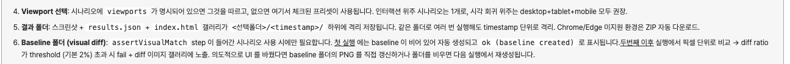
UI/UX E2E 테스트 도구 — Viewport 선택과 Baseline 폴더(시각 회귀) 설정 패널 확대
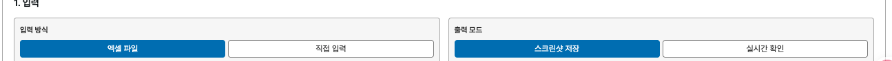
LLM 응답 검수 도구 — 입력 방식(엑셀 파일)과 출력 모드(스크린샷 저장) 설정 패널 확대
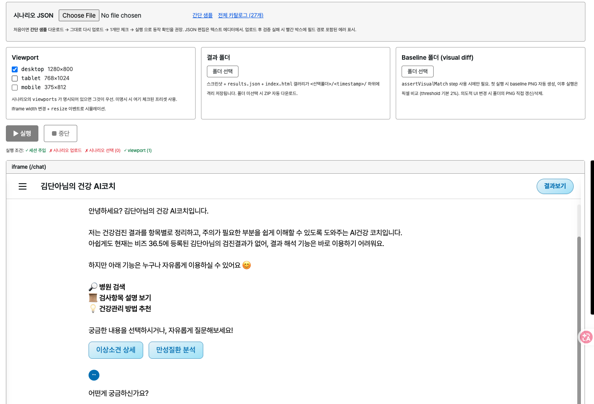
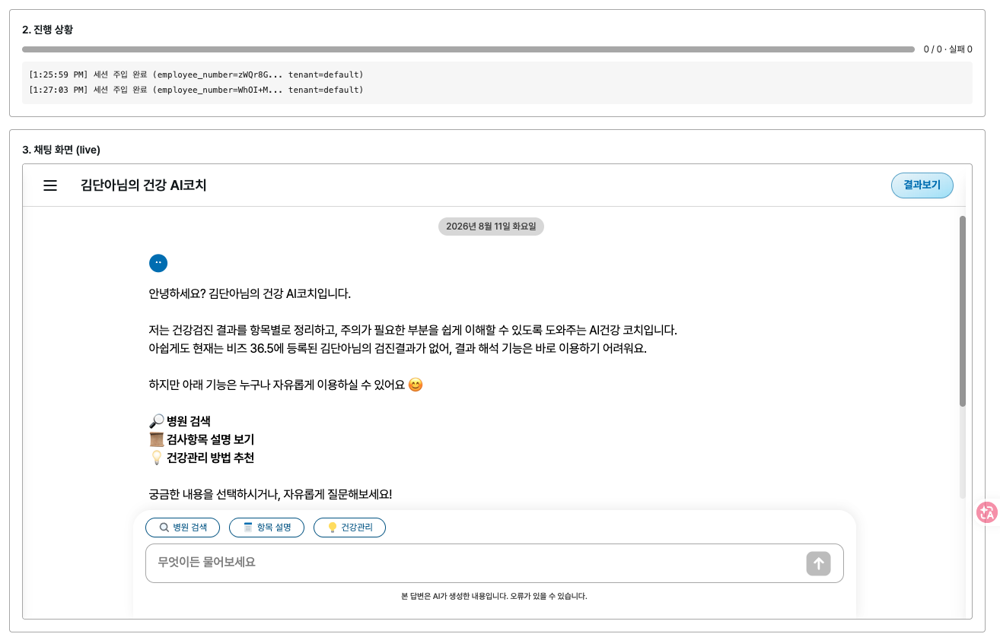
도구 실행 화면 — 세션 주입과 시나리오 업로드부터 실행까지의 운용 절차
한국미스미
글로벌 B2B 커머스 Next.js 전면 전환 — 화면 비공개 텍스트 챕터
한국미스미 프로젝트는 고객사 SI 프로젝트로 화면을 공개할 수 없어, 이 챕터는 화면 없이 텍스트로만 정리했습니다. 일본 본사 주도의 전 지사 아키텍처 통일 프로젝트에서 한국 팀 6인 중 React 최숙련자로서 실질 리드를 맡아 PHP·jQuery 기반 글로벌 B2B 쇼핑몰을 Next.js·TypeScript로 전면 전환했고, 일본 본사 개발자와 일본어로 직접 협업하며 전환을 완료했습니다.
문제
PHP·jQuery 기반 글로벌 B2B 쇼핑몰은 화면 간 결합도가 높아 기능 확장과 유지보수가 어려웠고, 긴 초기 접근 시간과 단일 렌더링 방식으로 성능과 검색 노출을 함께 최적화하기 어려웠습니다. 일본 본사의 전 지사 아키텍처 통일 결정을 계기로 한국 웹의 전면 전환을 이끌어야 하는 상황이었습니다.
판단
주어진 아키텍처 위에서 페이지별 SSR/CSR 렌더링 경계를 직접 판단했습니다. 초기 HTML·LCP·hydration 시간·인터랙션 지연을 확인하며 상품·검색 유입 페이지는 SEO와 초기 로드를 위해 SSR로, 로그인 후 상호작용 중심 페이지는 CSR로 분리했고, Vercel 배포 후 Lighthouse·Datadog·GA로 성능 지표를 확인했습니다.
Lighthouse 기반 병목 분석 후 라우트·컴포넌트 단위 code splitting, next/image 이미지 최적화, next/link prefetch, 번들 청크 분할을 적용했고, i18next 기반 영·중·일 다국어 구조를 대응했습니다.
결과
한국 법인 웹을 PHP·jQuery에서 Next.js·React·TypeScript로 전면 전환을 완료해 기존 PHP 서비스 대비 평균 로딩 속도 약 50% 개선을 확인했습니다. 별도의 유지보수·성능 개선 프로젝트에서는 Lighthouse 병목 분석과 리소스 최적화로 페이지 접근 시간 8초 → 2초를 단축했습니다.